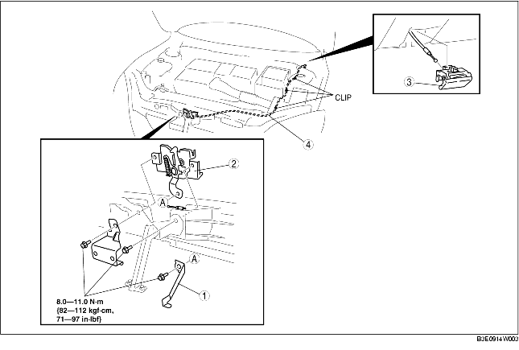

BONNET LATCH AND RELEASE LEVER REMOVAL/INSTALLATION [L.H.D.]
B3E091467001W01
1. To remove the bonnet release cable, remove the following parts:
-
(1) Battery (See BATTERY REMOVAL/INSTALLATION [ZJ, Z6].) (See BATTERY REMOVAL/INSTALLATION [LF].)
-
(2) Fresh-air duct (See INTAKE-AIR SYSTEM REMOVAL/INSTALLATION [ZJ, Z6].) (See INTAKE-AIR SYSTEM REMOVAL/INSTALLATION [LF].)
2. Remove in the order indicated in the table.
3. Install in the reverse order of removal.
4. Adjust the bonnet. (See BONNET ADJUSTMENT.)

.
|
1
|
Lever (5HB)
|
|
2
|
Bonnet latch
|
|
3
|
Bonnet release lever
|
|
4
|
Bonnet release cable
|
Bonnet Release Lever Removal Note
1. Pull the lever.
2. While pushing the tab in the direction of the arrow using a tape-wrapped, small flathead screwdriver, detach it from the lower panel.
-
Caution
-
• Remove the bonnet release lever while taking care not to damage the bonnet release cable with the flathead screwdriver.
3. Under the condition in Step 2, pull the bonnet release lever outward, then remove it from the lower panel.